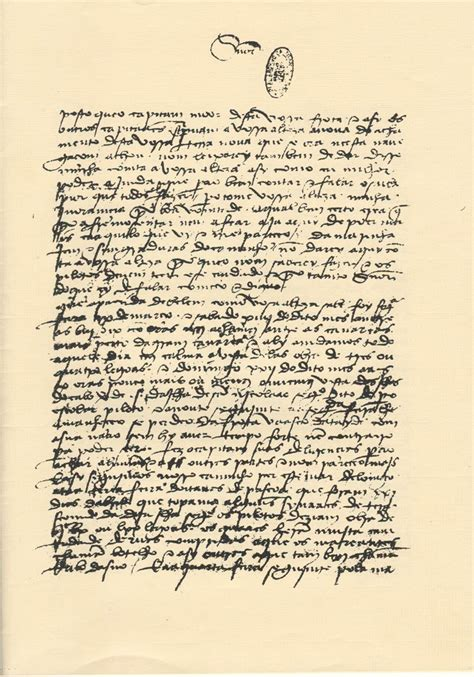
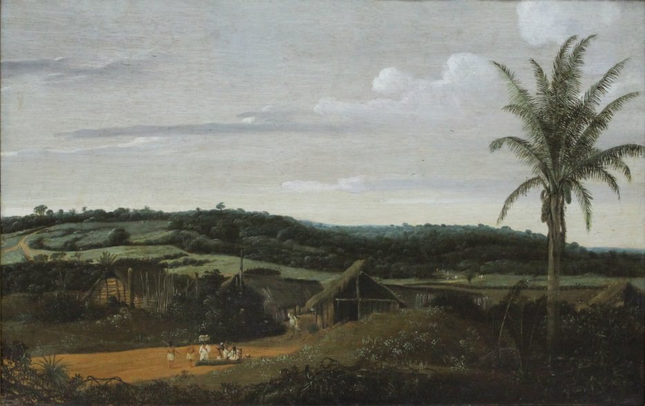

O Quinhentismo foi uma importante fase da história da literatura do Brasil e de Portugal, e como o nome sugeste, ele ocorreu durante todo século 16 (1501-1600). Esse movimento teve muitas diferenças em Portugal e no Brasil, mas no geral ele se caracterizava por relatos de viagem com características informativas e descritivas. Os textos quinhentistas em geral descreviam as terras descobertas pelos portugueses no século 16, e continha diversas informações e descrições, direcionadas por exemplo à fauna, flora e ao povo do local.
Por serem textos descritivos, eles continham um grande quantidade de adjetivos para descrever com detalhes as coisas encontradas nas expedições, e esses adjetivos eram utilizados para enfatizar ainda mais as características do local a fim de que o leitor - que estava do outro lado do mundo - pudesse "sentir" o que estava sendo retratado com a maior fidelidade possível.
Por fim, é importante ressaltar também a importância que os textos produzidos durantes o Quinhentismo tiveram para o nosso país e para a nossa literatura. Esses textos foram extremamente importantes para o processo de colonização e povoamento do Brasil, pois forneceram informações vitais do nosso país que ajudaram nesses processos. Além disso, esses textos posteriormente inspiraram uma literatura genuinamente brasileira e consequentemente diversos outros movimentos literários.